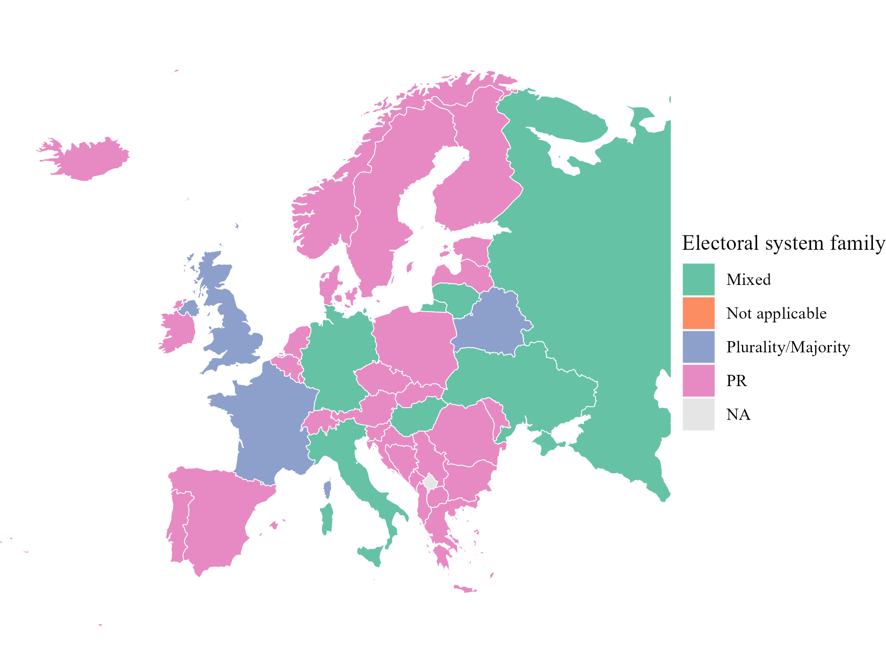
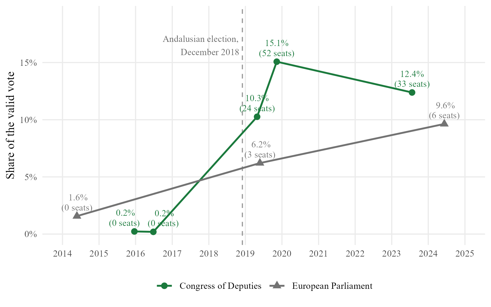
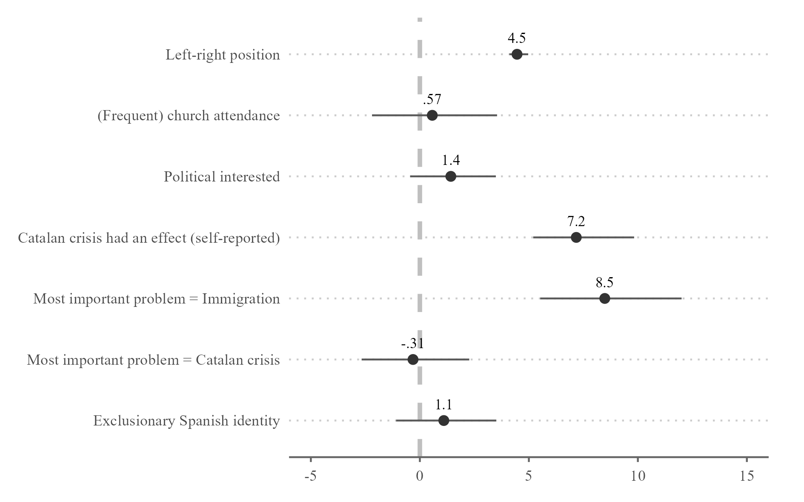
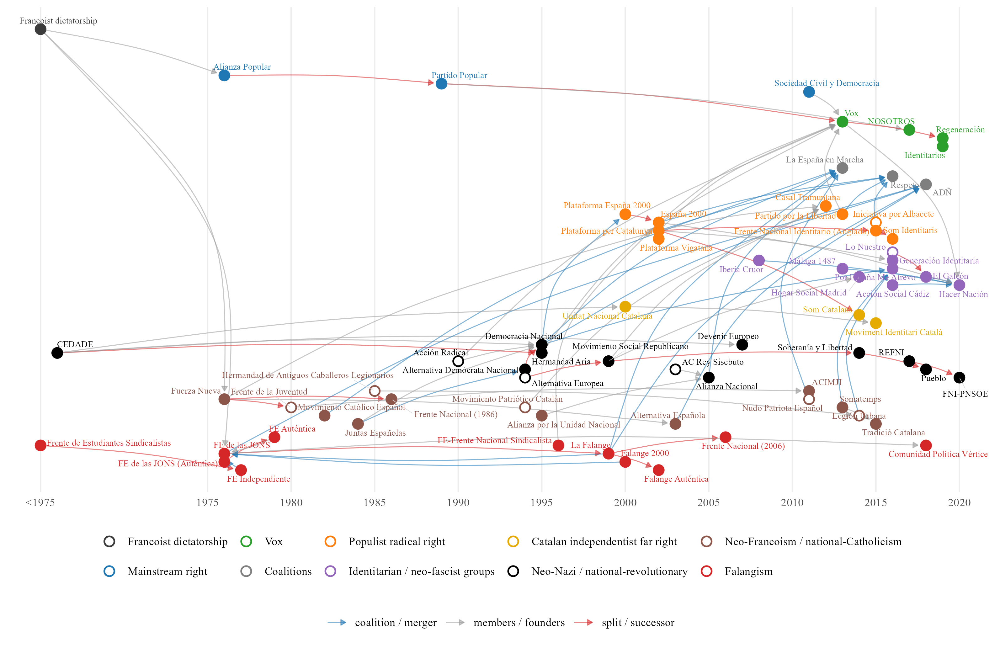
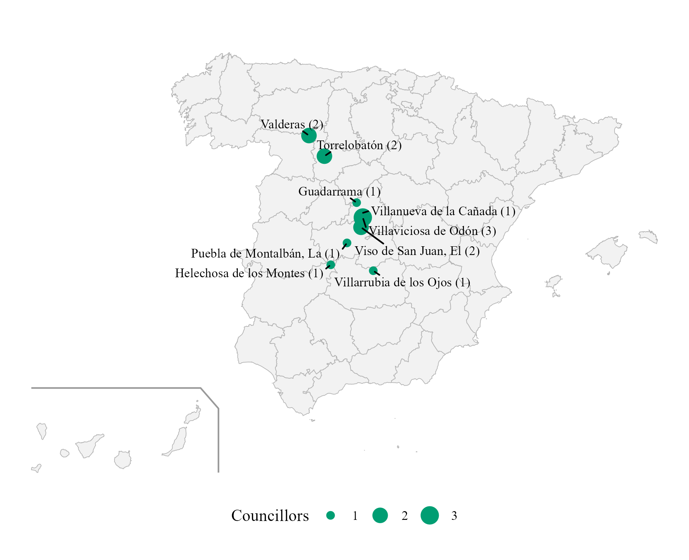
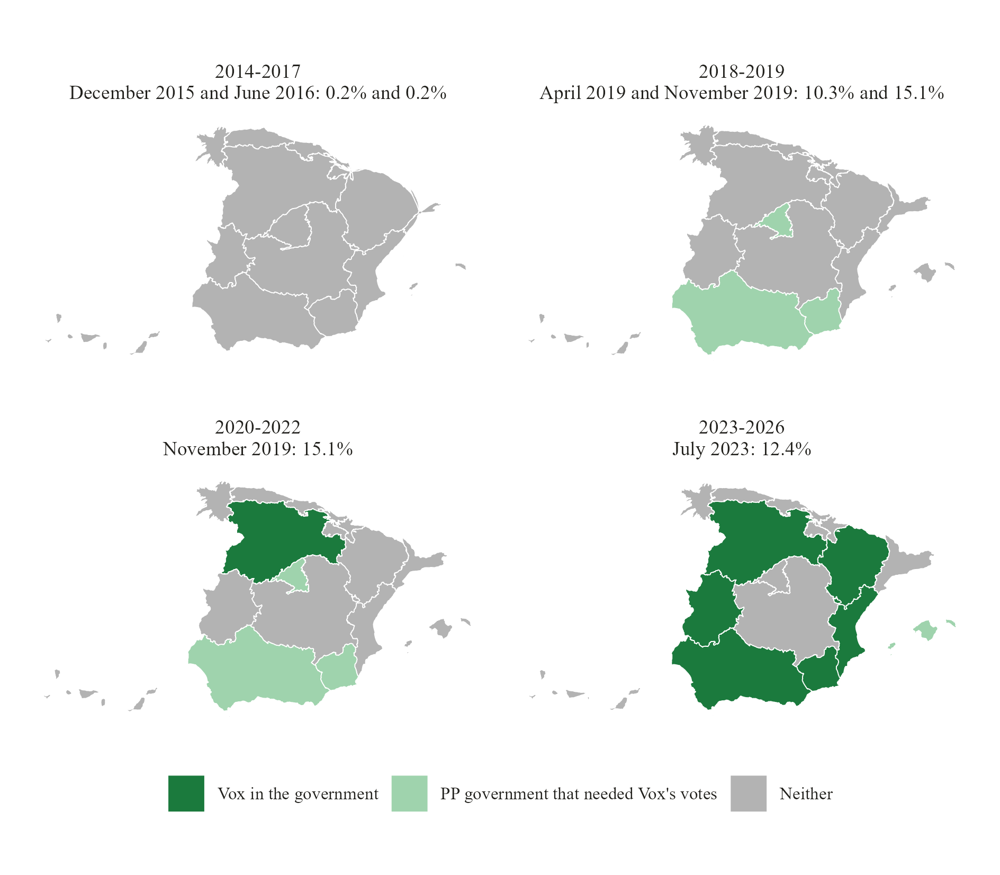
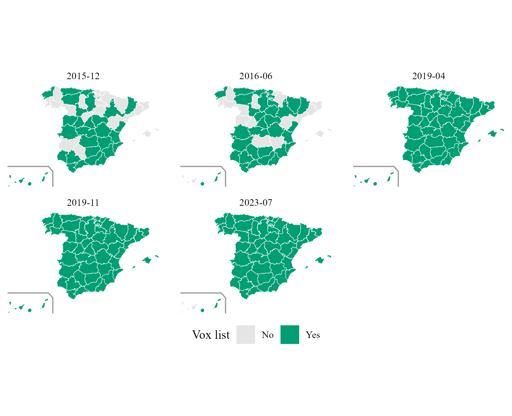
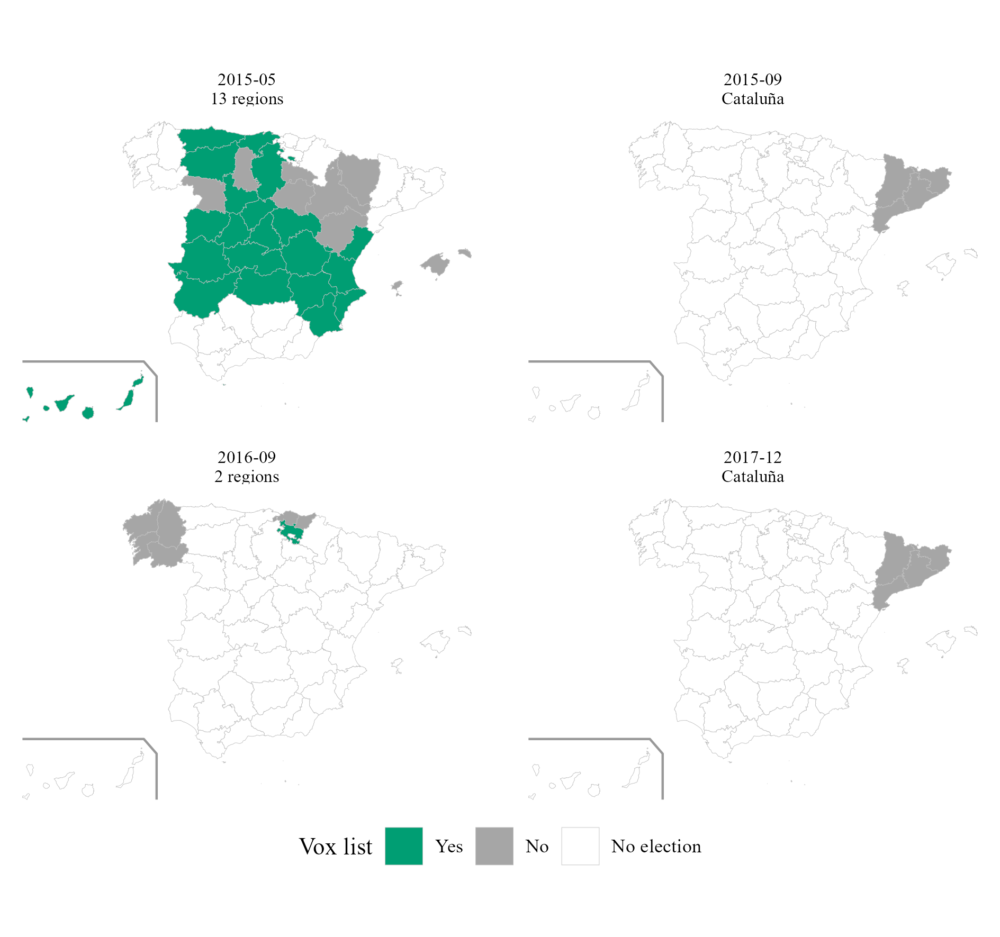
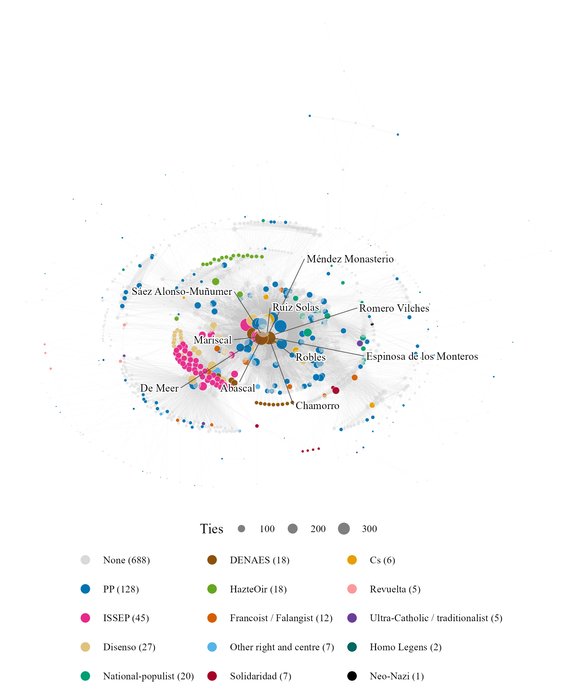

Figure 1
Electoral System Families in Europe

Note. Electoral system of the national legislature, latest year available. Data from the IDEA Electoral System Design Database.
Table 1
Founders of Vox
| Name | Relationship with Vox | Origin |
|---|---|---|
| Alejo Vidal-Quadras | First party President and Candidate for the 2014 European elections | President of the Catalan branch of the PP, member of its national executive; Director of FAES, DENAES |
| Ana Velasco Vidal-Abarca | Militant | Villasneros Foundation |
| Cristina Seguí | Ex-militant | - |
| Enrique Álvarez López | Militant | - |
| Ignacio Camuñas Solís | Ex-Vice-President and ex-President | Co-founder and ex Minister of UCD |
| Iván Espinosa de los Monteros | Spokesman, former Vice-President, ex-General Secretariat | Ex-Secretary of DENAES |
| José Antonio Ortega Lara | Militant | Ex-militant of the PP |
| José Luis González Quirós | Second President (ad interim), ex-militant | UCD, CDS, ex-militant of PP, FAES |
| María Jesús Prieto-Laffargue | Ex-militant | General Direction in the first Aznar Government (PP) |
| Santiago Abascal | President | PP, President of DENAES |
Note. Own elaboration from Casals (2020), Rama et al. (2021) and Sangiao (2018).
Figure 2
Vox's Share of the Valid Vote in General and European Elections, 2014–2024

Note. Seats won in brackets. In the European Parliament, Vox obtained a fourth seat after Brexit (2020). Data from the Ministry of the Interior (infoelectoral) and the Junta Electoral Central.
Figure 3
Political Determinants of the Vote for Vox, November 2019

Note. Average marginal effects on the probability of voting Vox, in percentage points, with 95% confidence intervals. Controls not shown: gender, age, subjective class, education, income, rurality and autonomous community fixed effects. Replication of Rama et al. (2021, fig. 4.12) with CIS study 3269 (2019b), n = 3,133.
Table 2
Far-Right and Right-Wing Populist Parties Registered Since 1976
| Party | Abbreviation | Registered | Cancelled |
|---|---|---|---|
| FALANGE ESPAÑOLA DE LAS J.O.N.S. | FE de las JONS | 04/10/1976 | |
| FUERZA NUEVA | F.N. | 19/10/1976 | 10/12/1982 |
| FALANGE ESPAÑOLA AUTENTICA | F.E.A. | 17/01/1979 | 03/10/2023 |
| CENTRO DEMOCRATICO Y SOCIAL | C.D.S. | 23/08/1982 | |
| JUNTAS ESPAÑOLAS | 27/06/1986 | ||
| FRENTE NACIONAL | 24/11/1986 | 20/07/1994 | |
| PARTIDO DEL TRABAJO Y EMPLEO-AGRUPACION RUIZ MATEOS "TRABAJO Y EMPLEO" | TYE. | 30/08/1989 | |
| GRUPO INDEPENDIENTE LIBERAL | G.I.L. | 28/02/1992 | 06/09/2004 |
| DEMOCRACIA NACIONAL | D.N. | 25/05/1995 | |
| ALIANZA NACIONAL | A.u.N. | 23/01/1996 | 11/10/2023 |
| LA FALANGE | FE | 24/03/1999 | |
| MOVIMIENTO SOCIAL REPUBLICANO | M.S.R. | 30/11/1999 | |
| FALANGE 2.000 | FE-2.000 | 11/01/2000 | |
| PLATAFORMA PER CATALUNYA | PxC | 05/04/2002 | 17/12/2020 |
| FALANGE AUTENTICA | FAu | 30/04/2002 | |
| ESPAÑA 2000 | E-2000 | 17/07/2002 | |
| ALTERNATIVA ESPAÑOLA | AES | 21/04/2003 | 09/01/2023 |
| ALTERNATIVA DE GOVERN | Alternativa de Govern | 12/04/2010 | |
| JUNTS PER TABARNIA - VIA DEMOCRÁTICA | VD | 31/01/2011 | |
| SOCIEDAD CIVIL Y DEMOCRACIA | SCD | 20/06/2011 | |
| PARTIDO POR LA LIBERTAD | PxL | 25/02/2013 | 19/09/2019 |
| SOBERANÍA Y LIBERTAD | S. y L. | 17/11/2014 | |
| SOM IDENTITARIS | SOMI | 16/02/2016 | |
| "NOSOTROS" PARTIDO DE LA REGENERACIÓN SOCIAL | N+ | 03/08/2017 | |
| FRENTE: NACIONAL IDENTITARIO, PARTIDO NACIONALSOCIALISTA OBRERO ESPAÑOL | FNI-PNSOE | 15/03/2018 | |
| ADÑ | ADÑ | 15/10/2018 | |
| PUEBLO | PLO | 27/03/2023 |
Note. Parties selected following Casals (2020). Cancelled: date on which the party was struck off the registry. Data from the Ministry of the Interior registry of political parties (Maldita, 2024; update of September 2026).
Figure 4
Family Tree of the Spanish Far Right, 1975–2026

Note. Each arrow goes from an organisation to the one that came out of it, joined a coalition with it or took its members. Hollow dots: approximate year. Own elaboration from Ramos (2022), Casals (2020) and Wikipedia (Falangist parties).
Table 3
Vox's Satellite Organisations
| Organisation | Type | Founded | Link with Vox | Members identified | Vox candidates |
|---|---|---|---|---|---|
| HazteOir | Association (lobby) | 2001 | Ultra-Catholic lobby, ally of Vox | 19 | 3 |
| DENAES | Foundation | 2006 | Founded and chaired by Santiago Abascal before Vox | 18 | 6 |
| CitizenGO | Online platform | 2013 | International platform of HazteOir | 0 | 0 |
| Homo Legens | Publishing house | 2017 | Publisher of Vox leaders (Intereconomia group) | 4 | 0 |
| Disenso | Foundation (think tank) | 2020 | Think tank of Vox, chaired by Santiago Abascal | 29 | 7 |
| ISSEP | Training institute | 2020 | Madrid branch of Marion Marechal's institute; trains Vox cadres | 52 | 8 |
| Solidaridad | Trade union | 2020 | Trade union promoted by Vox | 8 | 4 |
| Revuelta | Youth association | 2023 | Launched by Vox affiliates and employees | 5 | 3 |
Note. Members identified: board members and staff found in the archived websites (Wayback Machine), the BOE (Solidaridad) and the press (Revuelta, Homo Legens). Vox candidates: members who stood on a Vox list.
Table 4
Vox Candidates by Level of Election, 2014–2026
| Variable | National | Autonomical | Municipal | Total |
|---|---|---|---|---|
| Candidacies | 2504 | 4244 | 41442 | 48190 |
| Different people | 1890 | 3680 | 37927 | 39419 |
| Different people elected | 73 | 180 | 1869 | 2062 |
| Elections | 8 | 19 | 3 | 30 |
| Women (%) | 44.8 | 46.5 | 42.9 | 43.3 |
| Elected (%) | 4.8 | 6 | 5 | 5.1 |
| Within expected seats (%) | 4 | 4.3 | 1.2 | 1.6 |
| Seat in previous election (%) | 13.9 | 6 | 0.6 | 1.8 |
| Ran for another party before (%) | 15.9 | 12 | 7.9 | 8.7 |
| In the CEN before the election (%) | 2.24 | 0.4 | 0.06 | 0.2 |
| Organic position in Vox (%) | 6.07 | 2.8 | 0.33 | 0.84 |
Note. One row per candidacy, except the counts of people. Total: all levels together, so a person elected at two levels is counted once. Sex of municipal candidates inferred from the forename (INE). Own dataset from infoelectoral and the official gazettes.
Table 5
Vox Electoral Results by Election
| Level | Election | Lists | Candidates | Expected seats | Seats won | Lists with seats |
|---|---|---|---|---|---|---|
| National | european_2014_05 European Parliament | 1 | 54 | 0 | 0 | 0 |
| National | general_2015_12 Congress | 30 | 226 | 0 | 0 | 0 |
| National | general_2015_12 Senate | 29 | 70 | 0 | 0 | 0 |
| National | general_2016_06 Congress | 34 | 239 | 0 | 0 | 0 |
| National | general_2016_06 Senate | 33 | 76 | 0 | 0 | 0 |
| National | general_2019_04 Congress | 52 | 350 | 37 | 24 | 18 |
| National | general_2019_04 Senate | 52 | 143 | 0 | 0 | 0 |
| National | european_2019_05 European Parliament | 1 | 54 | 5 | 3 | 1 |
| National | general_2019_11 Congress | 52 | 350 | 21 | 52 | 33 |
| National | general_2019_11 Senate | 52 | 57 | 0 | 2 | 2 |
| National | general_2023_07 Congress | 51 | 343 | 28 | 33 | 24 |
| National | general_2023_07 Senate | 51 | 154 | 2 | 0 | 0 |
| National | european_2024_06 European Parliament | 1 | 61 | 6 | 6 | 1 |
| Autonomical | autonomous_2015_03 | 8 | 109 | 0 | 0 | 0 |
| Autonomical | autonomous_2015_05 | 27 | 560 | 0 | 0 | 0 |
| Autonomical | autonomous_2016_09 | 1 | 25 | 0 | 0 | 0 |
| Autonomical | autonomous_2018_12 | 8 | 109 | 1 | 12 | 8 |
| Autonomical | autonomous_2019_04 | 3 | 99 | 6 | 10 | 3 |
| Autonomical | autonomous_2019_05 | 38 | 757 | 9 | 37 | 10 |
| Autonomical | autonomous_2020_07 | 7 | 150 | 0 | 1 | 1 |
| Autonomical | autonomous_2021_02 | 4 | 135 | 9 | 11 | 4 |
| Autonomical | autonomous_2021_05 | 1 | 136 | 9 | 13 | 1 |
| Autonomical | autonomous_2022_02 | 9 | 81 | 8 | 13 | 8 |
| Autonomical | autonomous_2022_06 | 8 | 109 | 21 | 14 | 8 |
| Autonomical | autonomous_2023_05 | 35 | 786 | 50 | 79 | 26 |
| Autonomical | autonomous_2024_02 | 4 | 75 | 0 | 0 | 0 |
| Autonomical | autonomous_2024_04 | 3 | 75 | 1 | 1 | 1 |
| Autonomical | autonomous_2024_05 | 4 | 135 | 11 | 11 | 4 |
| Autonomical | autonomous_2025_12 | 2 | 65 | 12 | 11 | 2 |
| Autonomical | autonomous_2026_02 | 3 | 67 | 12 | 14 | 3 |
| Autonomical | autonomous_2026_03 | 9 | 82 | 18 | 14 | 9 |
| Autonomical | autonomous_2026_05 | 8 | 109 | 16 | 15 | 8 |
| Municipal | municipales_2015_05 | 120 | 2622 | 0 | 14 | 9 |
| Municipal | municipales_2019_05 | 695 | 12228 | 10 | 522 | 343 |
| Municipal | municipales_2023_05 | 1655 | 26592 | 500 | 1545 | 886 |
Note. Titular candidates only. Expected seats: candidates placed within the expected seats of their list. Own dataset from infoelectoral and the official gazettes.
Figure 5
Vox Councillors Elected in the Municipal Elections of May 2015

Note. Number of councillors in brackets. These were the only seats Vox held before 2018. Own dataset from infoelectoral.
Figure 6
Vox's Vote and Its Access to Regional Government, by Phase

Note. Contiguous cartogram: each region is resized by its area times Vox's share of the valid vote in the general elections of the phase, relative to its national share (a region where Vox did not run keeps 5% of its size). Colour: Vox held a post in the regional government, or its votes were needed to invest a PP president, at any point of the phase. The Canary Islands are moved next to the peninsula. Data from the Ministry of the Interior (infoelectoral).
Table 6
Vox Members of Regional Governments
| Region | Name | Position | From | To | Vox candidate in that election |
|---|---|---|---|---|---|
| Castilla y León | JUAN GARCIAGALLARDO FRINGS | Vicepresidente de la Junta de Castilla y León | 20/04/2022 | 11/07/2024 | Yes |
| Castilla y León | GONZALO SANTONJA GOMEZAGERO | Consejero de Cultura, Turismo y Deporte | 20/04/2022 | 11/07/2024 | No |
| Castilla y León | GERARDO DUENAS MERINO | Consejero de Agricultura, Ganadería y Desarrollo Rural | 20/04/2022 | 11/07/2024 | No |
| Castilla y León | MARIANO VEGANZONES DIEZ | Consejero de Industria, Comercio y Empleo | 20/04/2022 | 11/07/2024 | Yes |
| Comunidad Valenciana | VICENTE BARRERA SIMO | Vicepresidente Primero y Conseller de Cultura y Deporte | 17/07/2023 | 11/07/2024 | No |
| Comunidad Valenciana | ELISA NUNEZ SANCHEZ | Consellera de Justicia e Interior | 17/07/2023 | 11/07/2024 | No |
| Comunidad Valenciana | JOSE LUIS AGUIRRE LARRAURI | Conseller de Agricultura, Ganadería y Pesca | 17/07/2023 | 11/07/2024 | Yes |
| Extremadura | MARIA DEL CAMINO LIMIA | Consejera de Gestión Forestal y Mundo Rural | 20/07/2023 | 05/10/2023 | No |
| Extremadura | IGNACIO HIGUERO DE JUAN | Consejero de Gestión Forestal y Mundo Rural | 05/10/2023 | 11/07/2024 | No |
| Aragón | ALEJANDRO NOLASCO ASENSIO | Vicepresidente Primero y Consejero de Desarrollo Territorial, Despoblación y Justicia | 12/08/2023 | 12/07/2024 | Yes |
| Aragón | ANGEL SAMPER SECORUN | Consejero de Agricultura, Ganadería y Alimentación | 12/08/2023 | 12/07/2024 | No |
| Región de Murcia | JOSE ANGEL ANTELO PAREDES | Vicepresidente y Consejero de Interior, Emergencias y Ordenación del Territorio | 15/09/2023 | 12/07/2024 | Yes |
| Región de Murcia | JOSE MANUEL PANCORBO DE LA TORRE | Consejero de Fomento e Infraestructuras | 15/09/2023 | 12/07/2024 | Yes |
| Extremadura | OSCAR ARTURO FERNANDEZ CALLE | Vicepresidente y Consejero de Desregulación, Servicios Sociales y Familia | 30/04/2026 | in office | Yes |
| Extremadura | JUAN JOSE GARCIA LOBATO | Consejero de Agricultura, Ganadería y Medio Natural | 30/04/2026 | in office | No |
| Aragón | ALEJANDRO NOLASCO ASENSIO | Vicepresidente Primero y Consejero de Desregulación, Bienestar Social y Familia | 04/05/2026 | in office | Yes |
| Aragón | ARANZAZU SIMON PEREZ | Consejera de Agricultura, Ganadería y Alimentación | 04/05/2026 | in office | Yes |
| Aragón | LUIS FRANCISCO BIENDICHO GRACIA | Consejero de Medio Ambiente y Turismo | 04/05/2026 | in office | Yes |
| Castilla y León | CARLOS POLLAN FERNANDEZ | Vicepresidente Primero y Consejero de Desregulación, Familia y Ayudas Sociales | 15/06/2026 | in office | Yes |
| Castilla y León | JOAQUIN ANTONIO PINO | Consejero de Agricultura, Ganadería, Medio Rural y Política Ambiental | 15/06/2026 | in office | No |
| Castilla y León | JOSE ALBERTO DIAZ PICO | Consejero de Cultura, Turismo y Deporte | 15/06/2026 | in office | Yes |
| Andalucía | MANUEL GAVIRA FLORENTINO | Vicepresidente Segundo y Consejero de Turismo, Justicia, Desregulación y Administración Local | 10/07/2026 | in office | Yes |
Note. Data from the official gazettes of the autonomous communities and the press.
Figure 7
Provinces Where Vox Ran a Congress List, General Elections 2015–2023

Note. Own dataset from infoelectoral.
Figure 8
Constituencies Where Vox Ran in the Regional Elections of 2015–2017

Note. No election: the region did not hold an election on that date. Own dataset from the official gazettes.
Figure 9
Network of Vox's Electable Candidates and Satellite Members

Note. Connected component: 989 of the 1,551 nodes (the 454 isolated heads of municipal lists and the smaller components are not drawn). Two nodes are linked when they stood in the same election or belong to the same satellite organisation. Colour: previous party family or satellite organisation; size: number of ties; the ten best-connected candidates are labelled. Own dataset.
Table 7
Candidates Within and Just Below the Electability Threshold, Congress, July 2023
| Variable | Within the threshold | Just below it | Fisher p |
|---|---|---|---|
| Candidates | 42 | 137 | |
| Women | 11 (26.2%) | 68 (49.6%) | 0.008 |
| Managers (ISCO 1) | 8 (19.0%) | 14 (10.2%) | 0.176 |
| Professionals (ISCO 2) | 29 (69.0%) | 46 (33.6%) | <0.001 |
| Other occupations (ISCO 3-9) | 3 (7.1%) | 16 (11.7%) | 0.570 |
| Occupation unknown | 2 (4.8%) | 61 (44.5%) | <0.001 |
| Stood for another party before | 16 (38.1%) | 22 (16.1%) | 0.004 |
| of which PP or AP | 13 (31.0%) | 19 (13.9%) | 0.020 |
| of which Cs | 1 (2.4%) | 2 (1.5%) | 0.554 |
| of which historical far right | 4 (9.5%) | 1 (0.7%) | 0.011 |
| On a Vox list in 2013-2017 | 14 (33.3%) | 8 (5.8%) | <0.001 |
Note. Number of candidates and share of each group. Fisher p: exact test of each variable against the group. A candidate can have stood for several parties. Own dataset; occupations from the press and official CVs.
Table 8
Odds of Being Placed in an Electable Position, Congress Candidates, July 2023
| Variable | (1) | (2) | (3) | (4) | (5) |
|---|---|---|---|---|---|
| Managers (ISCO 1) | 2.75 | 2.41 | 1.78 | 3.23 | |
| (0.53, 14.19) | (0.47, 12.37) | (0.31, 10.06) | (0.48, 21.85) | ||
| Professionals (ISCO 2) | 3.30* | 2.83 | 2.38 | 2.18 | |
| (0.94, 11.66) | (0.81, 9.85) | (0.63, 9.00) | (0.44, 10.94) | ||
| Occupation unknown | 0.20* | 0.19* | 0.16** | 0.22 | |
| (0.03, 1.17) | (0.03, 1.12) | (0.03, 0.82) | (0.03, 1.85) | ||
| Female | 0.36*** | 0.53 | 0.55 | 0.75 | 0.92 |
| (0.17, 0.76) | (0.23, 1.21) | (0.23, 1.33) | (0.28, 2.02) | (0.36, 2.35) | |
| Stood for another party before | 2.34** | 2.98*** | 2.47 | ||
| (1.12, 4.86) | (1.37, 6.51) | (0.77, 7.92) | |||
| On a Vox list in 2013-2017 | 8.14*** | 5.23** | |||
| (2.59, 25.56) | (1.48, 18.44) | ||||
| Model | Logit | Logit | Logit | Logit | Conditional logit |
| Observations | 179 | 179 | 179 | 179 | 133 (32 constituencies) |
Note. Dependent variable: placed within the electability threshold. Odds ratios, with 95% confidence intervals in brackets from standard errors clustered by constituency (logits); the conditional logit (5) compares candidates of the same constituency, so it only uses the constituencies with candidates in both groups. Reference categories: men, occupations of ISCO groups 3–9. * p < .10. ** p < .05. *** p < .01.